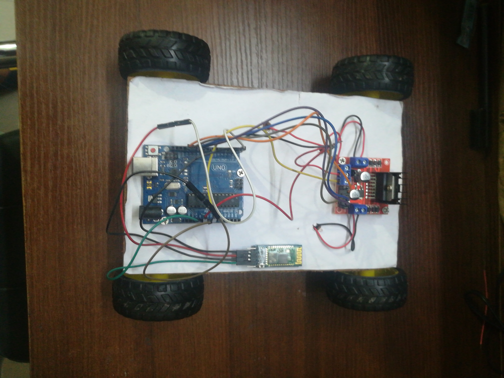

Welcome to Bhavuk-Web!
Bhavuk-Web is a website where I will be posting all my creations and projects.
My Projects-
1. Bluetooth Car
I was once watching the youtube and I came across a video that shoed how to make a bluetooth car. That day I had decided to make the same car. I ordered the materials from amazon and started to make it. It was a great experience and it didn't even take much time to make. It didn't even require so much of prerequisite knowledge to make it.
Result-
